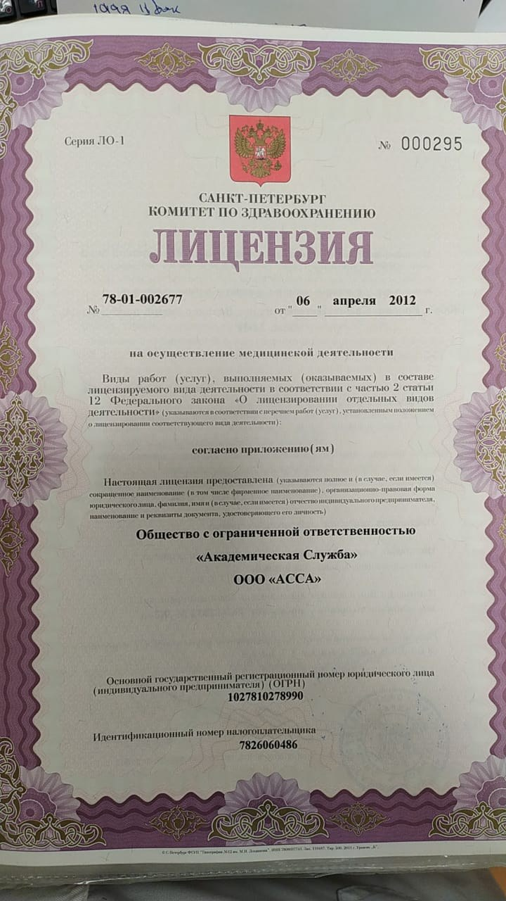

О нас в соответствии с Приказом №956н
Информация об организации в соответствии с приказом Министерства здравоохранения РФ №956н от 30.12.2014 «Об информации, необходимой для проведения независимой оценки качества оказания услуг медицинскими организациями, и требованиях к содержанию и форме предоставления информации о деятельности медицинских организаций, размещаемой на официальных сайтах Министерства здравоохранения Российской Федерации, органов государственной власти субъектов Российской Федерации, органов местного самоуправления и медицинских организаций в информационно-телекоммуникационной сети «Интернет».
1. Сведения об организации
Дата государственной регистрации, сведения об участниках и учредителях юридического лица: 30.11.2000, зарегистрировано Регистрационной палатой Администрации Санкт-Петербурга.
Учредитель: Егоров Эжен Олегович.
Структура и органы управления. Главный врач: Немчанинов Глеб Григорьевич.
2. График приёма граждан руководителем медицинской организации или иным уполномоченным лицом
Суббота с 15:00 до 16:00.
Электронная почта: acegen@yandex.ru
3. Контролирующие органы
- Комитет по здравоохранению. Мал. Садовая ул., д. 1. Телефон: 314-04-43
- Территориальный орган Росздравнадзора по Санкт-Петербургу и Ленинградской области. Наб. канала Грибоедова, 88/90. Телефон: 314-67-89
- Территориальный орган по надзору в сфере защиты прав потребителей и благополучия человека. Телефон: 316-68-66
4. О страховых медицинских организациях, с которыми заключены договоры на оказание и оплату медицинской помощи по обязательному медицинскому страхованию
ООО «Академическая служба» не включено в реестр медицинских организаций (поликлиники, больницы, стоматологические клиники), работающих в системе ОМС (обязательного медицинского страхования) города Санкт-Петербурга.
На основании закона «О территориальной программе государственных гарантий бесплатного оказания гражданам медицинской помощи в Санкт-Петербурге на 2019 год и на плановый период 2020 и 2021 годов», а также при финансовой поддержке территориального фонда ОМС, жители Санкт-Петербурга, страдающие от алкоголизма и иных видов химической зависимости, имеют право на получение бесплатной медицинской помощи в наркологических диспансерах Санкт-Петербурга.
5. Нормативно-правовая документация
- Права гражданина в сфере здравоохранения
- Перечень жизненно необходимых и важнейших лекарственных препаратов для медицинского применения
- «О программе государственных гарантий бесплатного оказания гражданам медицинской помощи на 2017 год и на плановый период 2018 и 2019 годов»
6. Законодательные акты
- Закон РФ от 07.02.1992 № 2300-1 «О защите прав потребителей»
- Федеральный закон от 21.11.2011 № 323-ФЗ «Об основах охраны здоровья граждан в Российской Федерации»
- Постановление Правительства РФ от 04.10.2012 № 1006 «Об утверждении Правил предоставления медицинскими организациями платных медицинских услуг»
- Постановление Правительства РФ от 16.04.2012 № 291 «О лицензировании медицинской деятельности (за исключением указанной деятельности, осуществляемой медицинскими организациями и другими организациями, входящими в частную систему здравоохранения, на территории инновационного центра «Сколково»)»
7. О медицинской деятельности медицинской организации
Медицинская деятельность осуществляется в соответствии с лицензией, выданной Комитетом по здравоохранению Санкт-Петербурга.

8. О видах медицинской помощи
B01.036.001Приём (осмотр, консультация) врача-психиатра-нарколога первичныйB01.036.002Приём (осмотр, консультация) врача-психиатра-нарколога повторныйB04.034.002Профилактический приём (осмотр, консультация) врача-психотерапевтаB01.047.001Приём (осмотр, консультация) врача-терапевта первичныйB01.047.002Приём (осмотр, консультация) врача-терапевта повторныйB01.023.001Приём (осмотр, консультация) врача-невролога первичныйB01.023.002Приём (осмотр, консультация) врача-невролога повторныйA21.01.001Общий массаж медицинскийA21.01.003Массаж шеи медицинскийA21.01.004Массаж верхней конечности медицинскийA21.01.005Массаж волосистой части головы медицинский
9. Программа государственных гарантий
О возможности получения медицинской помощи в рамках программы государственных гарантий бесплатного оказания гражданам медицинской помощи и территориальных программ государственных гарантий бесплатного оказания гражданам медицинской помощи.
О порядке, об объёме и условиях оказания медицинской помощи в соответствии с программой государственных гарантий бесплатного оказания гражданам медицинской помощи и территориальной программой государственных гарантий бесплатного оказания гражданам медицинской помощи.
О показателях доступности и качества медицинской помощи, установленных в территориальной программе государственных гарантий бесплатного оказания гражданам медицинской помощи на соответствующий год.
10. Порядок оказания помощи
О сроках, порядке и результатах проводимой диспансеризации населения в медицинской организации, оказывающей первичную медико-санитарную помощь и имеющей прикреплённое население: организация не относится к первичному звену, диспансеризацию населения не проводит.
О правилах записи на первичный приём, консультацию, обследование: определённой подготовки не требуется.
О правилах подготовки к диагностическим исследованиям: определённой подготовки не требуется.
О правилах и сроках госпитализации: помощь оказывается в рамках амбулаторной помощи, определённой подготовки не требуется.
О правилах предоставления платных медицинских услуг: в соответствии с постановлением Правительства РФ от 4 октября 2012 г. № 1006 «Об утверждении Правил предоставления медицинскими организациями платных медицинских услуг».
О перечне оказываемых платных медицинских услуг, о ценах и тарифах на медицинские услуги: полный прайс-лист центра.
11. Специалисты клиники
Главный врач: Немчанинов Глеб Григорьевич
Образование: выпускник Военно-медицинской академии им. С. М. Кирова, 2007 г. Интернатура по психиатрии, профессиональная переподготовка по психиатрии-наркологии и психотерапии. Психиатр-нарколог клиники, психотерапевт.
Направления: интегративная психотерапия, гештальт-психотерапия, позитивная психотерапия, психосинтез у больных алкоголизмом.
Сертификаты: по психотерапии от 23 июня 2017 года, выдан «Национальным медицинским исследовательским центром психиатрии и неврологии имени В. М. Бехтерева»; по психиатрии-наркологии от 08 мая 2019 года, выдан «Международной Ассоциацией Последипломного Образования».
Заместитель главного врача: Соколов Андрей Владимирович
Образование: выпускник Военно-медицинской академии им. С. М. Кирова, 1998 г. Интернатура по терапии, профессиональная переподготовка по неврологии, по организации здравоохранения и общественному здоровью. Ведущий терапевт, невролог клиники.
Направления: неврологические и терапевтические расстройства у больных алкоголизмом.
Сертификаты: по терапии от 15 мая 2017 года, выдан ООО «Международная Ассоциация Последипломного Образования»; по неврологии от 29 июня 2017 года, выдан «Международной Ассоциацией Последипломного Образования».
12. О вакантных должностях
Должность врача психиатра-нарколога.
13. О перечне жизненно необходимых и важнейших лекарственных препаратов для медицинского применения
В соответствии с Распоряжением Правительства РФ от 12 октября 2019 г. № 2406-р «О перечне жизненно необходимых и важнейших лекарственных препаратов для медицинского применения на 2020 год, перечня лекарственных препаратов для медицинского применения, в том числе лекарственных препаратов для медицинского применения, назначаемых по решению врачебных комиссий медицинских организаций, перечня лекарственных препаратов, предназначенных для обеспечения лиц, больных гемофилией, муковисцидозом, гипофизарным нанизмом, болезнью Гоше, злокачественными новообразованиями лимфоидной, кроветворной и родственных им тканей, рассеянным склерозом, а также лиц после трансплантации органов и (или) тканей, а также минимального ассортимента лекарственных препаратов, необходимого для оказания медицинской помощи».
О перечне лекарственных препаратов, предназначенных для обеспечения лиц, больных гемофилией, муковисцидозом, гипофизарным нанизмом, болезнью Гоше, злокачественными новообразованиями лимфоидной, кроветворной и родственных им тканей, рассеянным склерозом, а также лиц после трансплантации органов и (или) тканей. За разъяснениями обращаться к председателю врачебной комиссии.
О перечне лекарственных препаратов, отпускаемых населению в соответствии с Перечнем групп населения и категорий заболеваний, при амбулаторном лечении которых лекарственные средства и изделия медицинского назначения отпускаются по рецептам врачей бесплатно, а также в соответствии с Перечнем групп населения, при амбулаторном лечении которых лекарственные средства отпускаются по рецептам врачей с пятидесятипроцентной скидкой.
В соответствии с Распоряжением Комитета по здравоохранению Санкт-Петербурга от 19.02.2008 года № 74-р «Об утверждении перечней учреждений здравоохранения, врачей и аптечных организаций, участвующих в обеспечении лекарственными средствами и изделиями медицинского назначения льготных категорий жителей Санкт-Петербурга на 2008 год».
ООО «Академическая служба» в указанный перечень не входит.
14. Правила внутреннего распорядка
Правила внутреннего распорядка для потребителей услуг предоставляются по запросу. Обратитесь по телефону (812) 314-44-82 или по электронной почте acegen@yandex.ru.